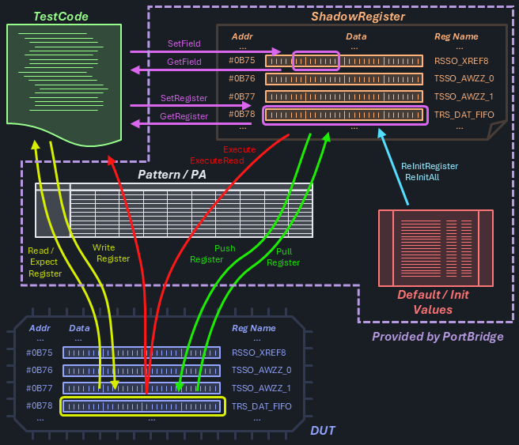

Transaction Service
Manually implementing device communication using hardcoded patterns or custom-designed digital source and capture signals is both labor-intensive and increasingly outdated, particularly for high-complexity ("big-D") devices. Modern design workflows that incorporate device testing enable this complexity to be abstracted into standardized data communication protocols, with low-level signal manipulation (bit-bashing) handled transparently by the underlying system.
Note
The setup part of Transaction Service communication is deferred to a later point. In the first tier, the APIs for the transactions themselves are offered. A generic setup use model is added at a later point, until then users are deferred to instrument specific language for this task.
PortBridge
On IG-XL based platforms, PortBride is the product providing that abstraction use model for test programs. It's highly flexible and configurable on the user level, and interacts with hardware features like ProtocolAware or PatternModify in the most efficient way.
PortBridge is an optional product, which users may or may not choose to use. Licensing cost is only one aspect; in some cases, customers rely on custom infrastructure that has matured over years and is tightly integrated into their design processes to work with multiple competitive tester platforms.
Important
C#RA needs to support setups with or without PortBridge, at least from a use model perspective. Functionality and capability may differ, meaning that C#RA does not have to back-fill all PortBridge features in setups choosing to go without. Basic functionality should be covered though.
In case of PortBridge being available in a configuration, users may still want to decide to implement with or without on a by-test basis.
Use Model
Register Map
Typically, the device's address space is marked up with speaking names for registers (entire memory locations at the device's native bit width, i.e. 32bit) and fields (usually a sub-set of a single register, like 8 bits used for a 256 step voltage reference trim). That information is defined in the chip design tools and commonly available in an interchangeable data format like XML. The test program reads this register map definition in order to allow interacting with the device via meaningful descriptors.
Register Maps may be used to apply device hardware abstraction. For example could the string VREF_TRIM generally refer to the voltage reference trim code field even if located at different physical memory locations in different devices. By using the abstract name to access that data, the same code / transaction language may be used for any device following that scheme.
Register Maps typically contain the following information:
- register: name and address
- field: name, register, start bit (LSB), bit width (sometimes bit order / masking and multi-register-span info)
- default / reset values (sometimes these may differ)
The TransactionService is designed in a generic way to open up support for non-int situations, which will become prevalent once IG-XL enables SiteGenerics support for those, too. This is currently planned for IG-XL 11.10.
Shadow Register
Shadow registers are register data structures mirrored to the tester computer memory reflecting the device's memory structure. It can be considered a cache.
The shadow register provides site-aware capability. This can be achieved by maintaining a full copy per site. Alternatively, because the vast majority of information will typically not need this capability, the shadow register may be considered site-agnostic and only the site-aware activity is deferred into a dedicated, separate structure.
Multiple Ports
Some devices may have multiple register maps, be it to facilitate separate physical memory blocks or different access ports or protocols. C#RA supports this case, with an (optional) port argument in the transaction calls. If left empty, the (configurable) default port is used. This helps with a simplified use model for the common scenario of a single port device.
Data Paths
The following paths exist for data at runtime of a test program:

To easily distinguish the entities, clear naming notations are used. All operations work transparently for the selected sites.
TestCode <--> Shadow Register: Get / Set Notation
I/O operations with the Shadow Register can be executed at any time without physical device interaction. These operations are often executed in bulk for increased efficiency.
GetField
Site<T> GetField<T>(string register, string field, string port = "");- read (bit masked & shifted) data from a shadow register field
SetField
void SetField<T>(string register, string field, T data, string port = "");- write site-uniform (bit masked & shifted) data into a shadow register fieldvoid SetFieldPerSite<T>(string register, string field, Site<T> data, string port = "");- write site-specific (bit masked & shifted) data into a shadow register field
GetRegister
Site<T> GetRegister<T>(string register, string port = "");- read data from a shadow register
SetRegister
void SetRegister<T>(string register, T data, string port = "");- write site-uniform data into a shadow registervoid SetRegisterPerSite<T>(string register, Site<T> data, string port = "");- write site-specific data into a shadow register
Shadow Register <--> DUT: Pull / Push / Execute Notation
Actual device communication is handled via a digital / pattern subsystem allowing I/O operations on a register basis.
PullRegister
void PullRegister(string register, string port = "");- transfer data from the device into the shadow register
PushRegister
void PushRegister(string register, string port = "");- transfer data from the shadow register to the device
TestCode <--> DUT: Read / Expect / Write Notation
Direct DUT transactions are often implemented via digital transaction instruction language and executed as part of patterns / modules. These commands are offered to complete the use model, they may be helpful in debugging or troubleshooting scenarios.
ReadRegister
Site<T> ReadRegister<T>(string register, string port = "");- read data from a device register
ExpectRegister
Site<bool> ExpectRegister<T>(string register, T data, string port = "");- read data from a device register and compare with a site-uniform expectationSite<bool> ExpectRegisterPerSite<T>(string register, Site<T> data, string port = "");- read data from a device register cond compare with a site-specific expectation
WriteRegister
void WriteRegister<T>(string register, T data, string port = "");- write site-uniform data into a device registervoid WriteRegisterPerSite<T>(string register, Site<T> data, string port = "");- write site-specific data into a device register
Execute Transactions
Complete transaction modules including multiple write and read operations can be executed with a single command. Note that the write direction sends shadow register data to the device, where the read direction retrieves device data directly into test code.
Execute
void Execute(string module, string port = "");- execute a transaction file (without reads)
ExecuteRead
List<Site<T>> ExecuteRead<T>(string module, int readCount, string port = "");- execute a transaction file including reads
Re-Initialize the ShadowRegister and Others
Commonly at Start-of-Test, or when specific use cases exist, the shadow register content needs to be re-initialized.
ReInitRegister / ReInitAll
void ReInitRegister(string register, string port = "");- set a shadow register to it's default / init valuevoid ReInitPort(string port);- set all shadow registers of a port to their default / init valuesvoid ReInitAll();- set all shadow registers of all ports to their default / init valuesstring DefaultPort {get; set;}- read/write the default port to be used when omitted in the methods above
Implementation
The use of PortBridge will add an external dependency to C#RA - and the fact that this needs to be conditional makes things not easier.
The model for conditional dependencies in C#RA is followed with these specifics:
| Entity | Term for PortBridge |
|---|---|
| custom MSBuild property | PortBridgeEnabled |
| indicator file | PortBridgeEnabled.txt located in VS solution folder |
| compiler constant | PORTBRIDGE_ENABLED |
Important
By default, the repo does not have the PortBridgeEnabled.txt file in the src folder, thus not enabling this feature. The use model follows an opt-in approach, where users actively select additional, optional features they want to use.
PortBridgeEnabled.txt has been added to .gitignore so that collaborators can permanently change their local coding environment without the risk to propagate this into the repository.
Alternatives Considered
The following options were considered but could not prevail due to the reasons stated.
Port Object Retrieved from Dictionary (= very simplified TransactionService)
// setup
Services.Transaction.SetupPort("portA", settingA, ... , ... , ...);
// single call
Services.Transaction.Port["portA"].SetRegister<T>(string register, T data)
// multiple calls
var port = Services.Transaction.Port["portA"];
port.SetRegister<T>(string register, T data);
| Ups | Downsides |
|---|---|
| close to IG-XL syntax | need to introduce TransactionServiceand TransactionPort type |
| types can't be versioned | |
| and unit testing would be more complicated | |
| no easy way to handle default ports |
Fully Object Oriented
// setup
var port = new TransactionPort(setting, ,... , ... , ...);
Services.Storage.Add(port, "portA");
// regular call
TransactionPort port = Services.Storage.TryGet("portA");
port.SetRegister();
| Ups | Downsides |
|---|---|
| very much the ".NET Way" | strong dependency from StorageService |
| (public) object could have been messed with or replaced with something else | |
| types can't be versioned | |
| no easy way to handle default ports |
Encode Port in Register Identifier
// setup
Services.Transaction.SetupPort("portA", settingA, ... , ... , ...);
// regular call - require "portA@reg123" register definition, with pre-@ part optional
Services.Transaction.SetRegister<T>(string register, T data)
| Ups | Downsides |
|---|---|
| eliminate port information from transaction method signatures | potentially expensive string processing in every call |
| easy to handle default | port and register information doesn't typically exist in this format |
Questions
- How to read / define the register map?
- Required to support register spanning fields and crazy encodings (inverted bits, strange order)?
- What PB version do we support? Multiple?
- control file location - is the
srcfolder the best place?